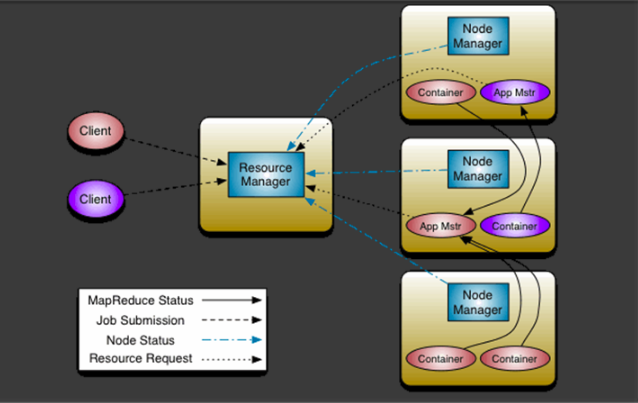
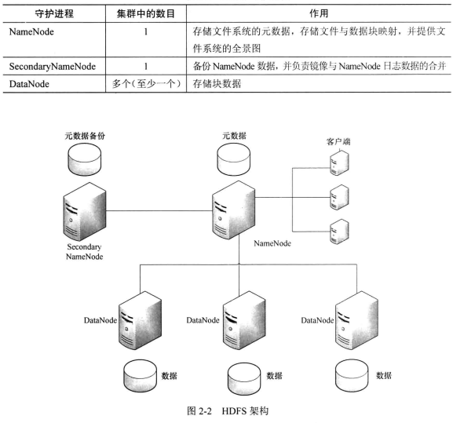
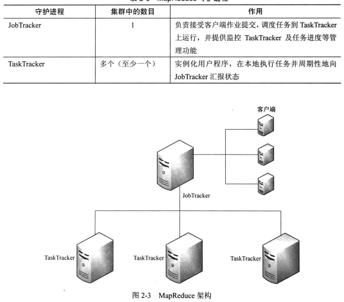
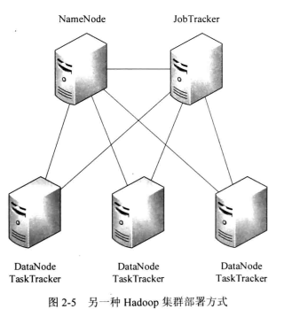

当一些查询翻译到MapReduce任务时，往往会产生多个Stage，而这些串联的Stage又依赖于底层文件系统（如HDFS）来存储每一个Stage的输出结果。
Hadoop 包含以下两个主要组件：Hadoop Distributed File System (HDFS) 和一个分布式计算引擎，该引擎支持以 MapReduce 作业的形式实现和运行程序。
新版本：

新旧版本：
主要是把Jobtracker拆成主从的RM + AM
Jobtracker是hadoop1.x中的组件，它的功能相当于：
Resourcemanager + MRAppMaster
TaskTracker 相当于：
Nodemanager + yarnchild
旧版本：
hdfs由nameNode管理。

MapReduce由jobtracker管理。

集群分布：
DataNode和TaskTracker部署在同一台节点上。
但是NameNode和JobTracker最好分开部署，为了性能和稳定。

设置reduce为0
mr不写reduce时，系统为了架构的完成性，仍然自动生成了一个reduce，这个reduce并不做shuffle和数据拖取，生成的结果文件就是map的输出文件。
但是可以直接通过job.setNumReduceTasks(0)实现将reduce设置成0个。
HDFS常用操作
hadoop dfs -ls 列出HDFS下的文件
hadoop dfs -ls in 列出HDFS下某个文档中的文件
hadoop dfs -put test1.txt test 上传文件到指定目录并且重新命名，只有所有的DataNode都接收完数据才算成功
hadoop dfs -get in getin 从HDFS获取文件并且重新命名为getin，同put一样可操作文件也可操作目录
hadoop dfs -rmr out 删除指定文件从HDFS上
hadoop dfs -cat in/* 查看HDFS上in目录的内容
hadoop dfsadmin -report 查看HDFS的基本统计信息
hadoop dfsadmin -safemode leave 退出安全模式
hadoop dfsadmin -safemode enter 进入安全模式
test
使用方法：hadoop fs -test -[ezd] URI
选项：
-e 检查目录/文件是否存在。如果存在则返回0。
-z 检查文件是否是0字节。如果是则返回0。
-d 如果路径是个目录，则返回1，否则返回0。
示例1：hadoop fs -test -e filename
示例2：shell判断hdfs目录是否存在:
1 | hadoop fs -test -e /hdfs_dir |
hadoop fs -ls -d
使用帮助命令hadoop fs -help ls 看到-d对应的是Directories are listed as plain files.
遇到的情况是hadoop fs -ls -d /user/hive/warehouse/test.db/t/*/* 假设表test.t是分区表，而且有两个分区，这条命令就可以输出该表所有的分区值。
hadoop fs -count < hdfs path >
输出 目录个数，文件个数，文件总计大小，输入路径
例如：
1 | hadoop fs -count /data/dltb3yi/ |
hadoop fs -rm -r
删除目录
job.waitForCompletion
Job运行是通过job.waitForCompletion(true)，true表示将运行进度等信息及时输出给用户，false的话只是等待作业结束
参考
hadoop常用命令：https://hadoop.apache.org/docs/r1.0.4/cn/hdfs_shell.html#test
https://www.cnblogs.com/zhaosk/p/4391294.html
https://blog.csdn.net/litianxiang_kaola/article/details/71154302 （wordcount例子）